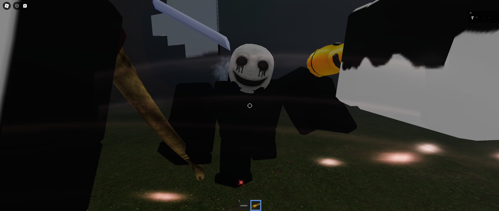
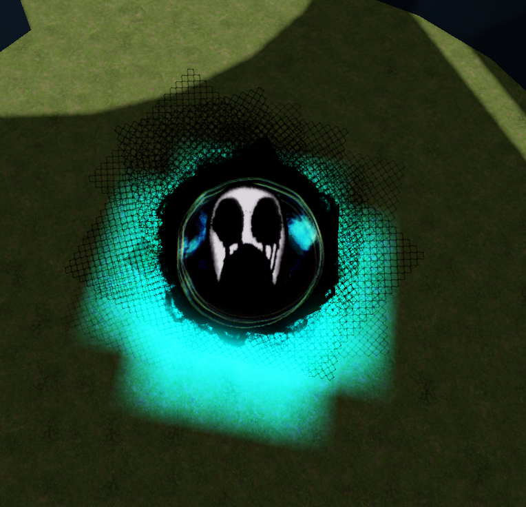

Welcome to my Experince!
Expressing creativity and determinition.
About Me
Hey there! I'm Siddharth, a teenager driven by a passion for blending creativity with cutting-edge technology. I thrive on crafting innovative dessigns and models while pushing the boundaries of what's possible within the digital world.
My Projects
In my journey, I've embarked on ambitious projects that fuse my love for coding with imaginative storytelling. One standout achievement is "Stare", an interactive ROBLOX simulation where users navigate through a virtual maze, blending complex layouts with spine-chilling monsters and sound effectsto create immersive experiences. Though I've had a more visully pleasing experince before this, it was sadly corrupted with a visual bug that I was unable to solve.
 Things I Love
I have a deep appreciation for music. As I love drumming and how basic sounds can affect our emotions.